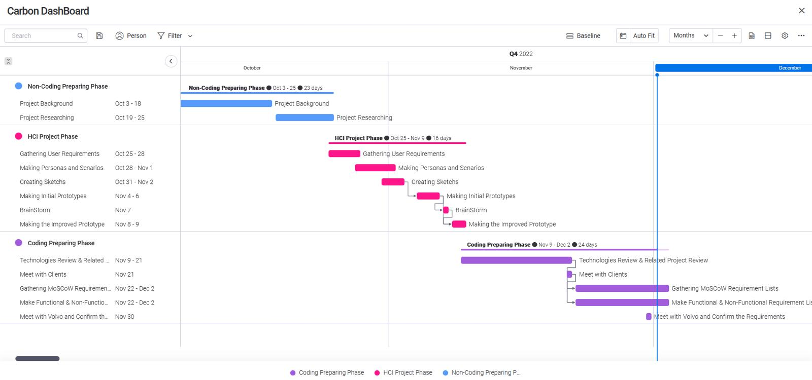
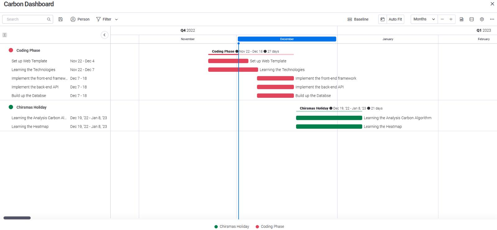
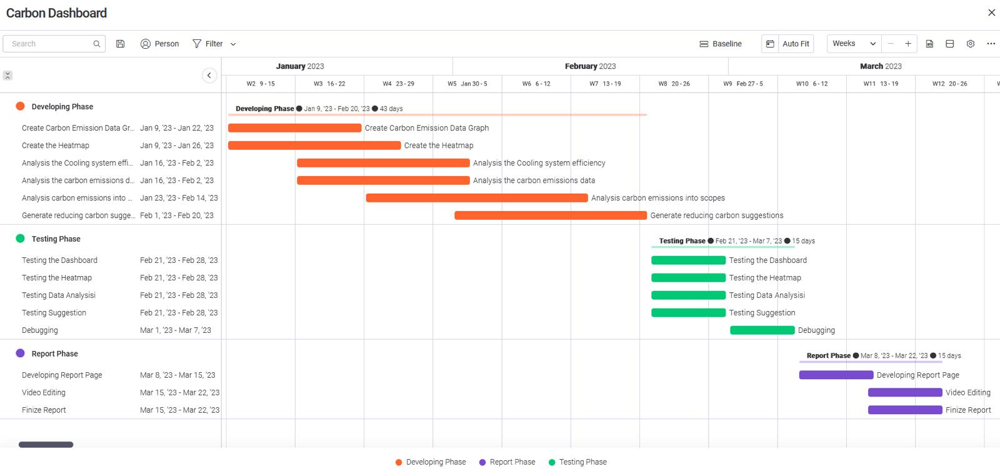

Abstract
Problem statement
A case study on Volvo Cars to see how green SW in Volvo could reduce carbon emissions generated in online sales. The hypothesis is that if we could reduce carbon emissions in each transactions the large volume would generate a great impact. We would also like to understand how (Data AI) predictions can be used to to give fact based information's for decisions. A prototype to measure the carbon emissions related to software, as well as a dashboard to visualise this.
Our solution
We propose a very high quality and end-to-end working dashboard that brings the power of AI to decision making in green software. Our solution fetches emission data from Microsoft Azure cloud service in real time and uses visualisew this data using graphs and charts. Additionally we feed this data into our machine learning algorithm which generates predicted future emisions by analysing the current usage patterns. Furthermore, since our end users are Non-Technical by nature, we generate future advice on how to reduce emisions unders various categories using the OPEN AI GPT model.
Achievement and Impact
Our dashboard is simple, clear and easy to navigate to all pages. The UI design did a great job at hiding the cumbersome information from the end users. We met all of our MUST Have and SHOULD Have's in the MOSCOW requirement as well as majority of our COULD Haves.
The website is compatiable with all common browsers eg Firefox/ Chrome/ Safari. Furthermore to maintain the code we have conducted several tests to ensure the product aligns with the requiremnts of our stakeholder as well as operating in real time as expected.
As a result, our Project Partner has given us the following feedback:
“For Avanade, allowing our IXN students to work with our clients directly shows our trust in the abilities of the students and the quality of their work. For the Volvo project this was our first time fostering a relationship with the IXN directly to an Avanade client. The team have proved that this trust has paid off, with a very high quality and end-to-end working prototype that brings the power of AI to decision making in green software. Sustainability will be at the heart of technology for years to come, and this early work is vital to identifying the art of the possible, as well as the gaps that need to be filled.” - Fergus Kidd
Team Members

Samuel Lubrano
Junzhang Li
Tianxiang Xiong
Gantt Chart
October - November

December + Christmas Holidays

January - March
